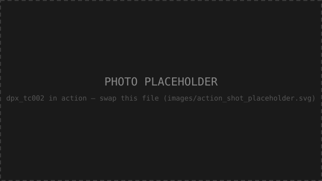
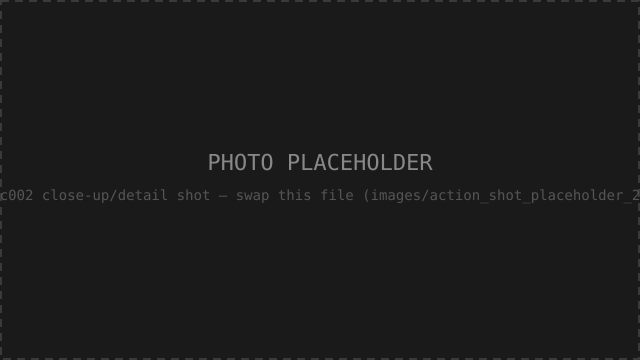
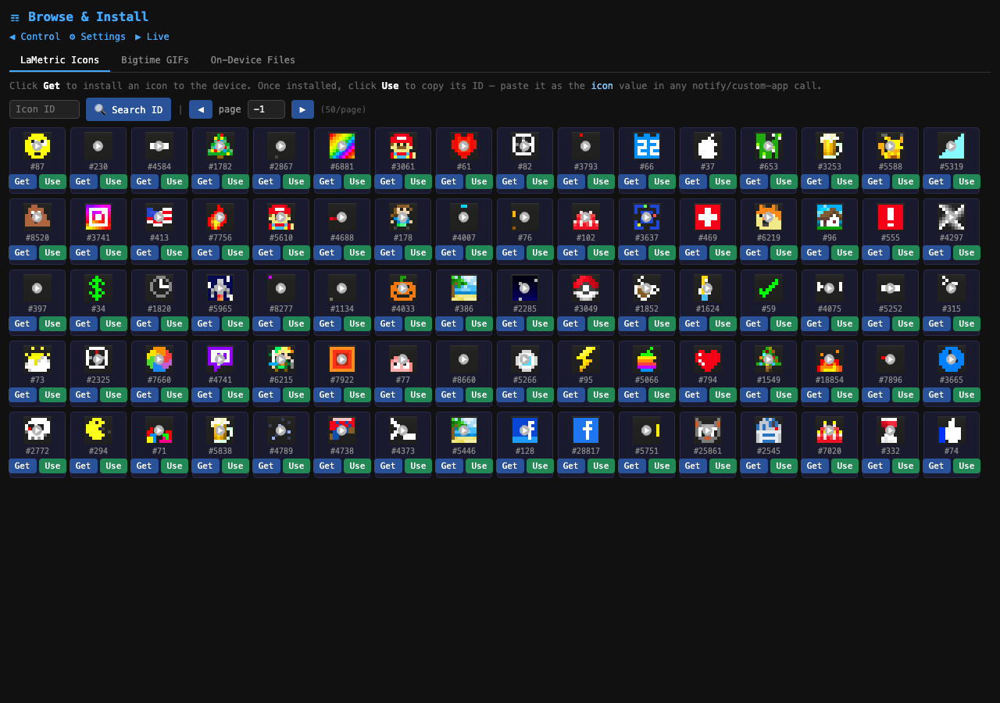
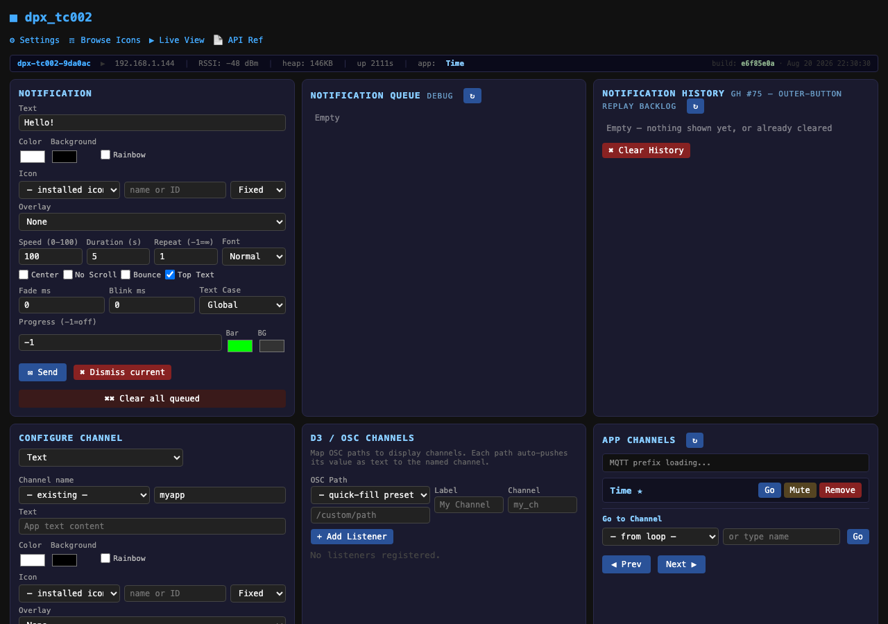
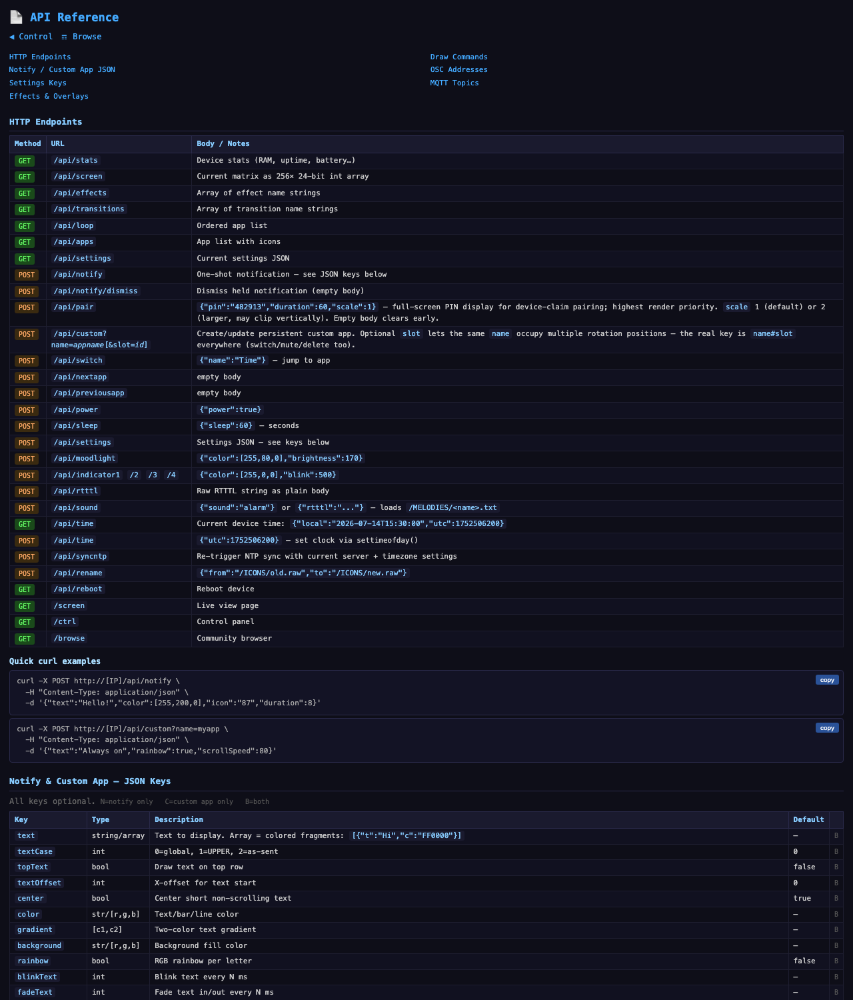

WLED for your wrist-worn pixel clock
Flash it from a browser, drive it from OSC/MQTT/HTTP — a fully documented open API, not just a clock.


dpx_tc002_frm is a custom WLED firmware build for the
Ulanzi TC001 —
a battery-powered ESP32 device with a 32×8 WS2812B LED matrix. It replaces the stock Awtrix
firmware with a WLED base plus the dpx_matrix usermod, adding timecode display,
OSC/MQTT control, scrolling text apps, pixel overlay effects, first-boot hardware configuration, and
a fully documented HTTP/OSC/MQTT API — it's not limited to being a clock, it's a general-purpose
networked pixel display you can drive from anything. Built on
WLED (EUPL v1.2) — all WLED
features remain fully functional.
Every endpoint is documented and open — HTTP, OSC, and MQTT. Grab the plain-markdown digest if you're an agent or just want it offline.
Pairs with matrix_blaster — account/device management, PIN device-claim, and a buddy-list-style way to message your devices. Optional; this firmware works standalone. →Action shots


🚧 Placeholders — real photos coming later.
What dpx_matrix adds over stock WLED
- OSC receiver (UDP 4210), compatible with dpx_tc001 and AWTRIX OSC senders
- MQTT — commands, device presence, icon fetch over WLED's broker connection
- Timecode display (LTC via OSC) with frame progress bar
- Notifications — one-shot priority messages, with a recall/history backlog
- 8×8 icon rendering — LaMetric PNG→raw pipeline, icon browser built into
/ctrl - Text app loop — scrolling/static custom apps, clocks, WLED pattern slots, multiple instances per app
- World clock — customizable per-instance clocks with their own timezone offset, color, and icon; add as many as you want
- OTA updates — inherited from the WLED base: HTTP + ArduinoOTA, password-protectable, no cable after the first flash
- First-boot config — usable out of the box, no wizard required
- Text overlay + 15 dpx-native pixel effects (weather, decorative, full-screen) composited live with text — 13 of 15 dodge lit text, 2 don't yet (GH #69). Separate from WLED's own 200+ built-in effects, which run via full-screen "pattern slot" dwells (no text shown during them) rather than simultaneous compositing — true text-over-any-WLED-effect is tracked as a bigger, unimplemented overhaul (GH #14)
- Device-claim PIN pairing — full-screen PIN for matrix_blaster's device-claim flow
- Browser-flashable firmware — no PlatformIO needed, see above
Icons & media browser
/browse is a built-in browser across three sources, no external tools needed:
LaMetric Icons (thousands of free icons, searchable,
one-click install), Bigtime GIFs (Blueforcer/awtrix3's
animated collection), and an on-device file manager for
/ICONS/ and /MELODIES/.

OSC control
The firmware's OSC receiver (UDP 4210) handles timecode, notifications, app switching,
brightness, and indicator colors. Paired with the included
tools/ltc_osc_bridge/
toolkit — a standalone Python app (CLI + local web GUI) that decodes real SMPTE LTC
timecode from audio (or a WAV file) and forwards it over OSC, generates fake test timecode
with no hardware needed, sends arbitrary OSC messages for scripting, and separately drives
disguise (d3) show control — play/stop, cue
triggering, volume/brightness, track name/id.
- Two-tab web GUI at
localhost:8765— no CLI flags to remember - Mac/Windows double-click launchers included
- Full OSC address list in the API docs
Plus everything WLED already does
Effects & Visuals
- 200+ built-in effects, audio-reactive & 2D/matrix
- 50+ palettes + built-in palette editor
- 2D matrix support, flexible panel mapping
- Effect blending, antialiased drawing
Connectivity
- JSON & HTTP APIs, Multi-WiFi + AP fallback
- MQTT with Home Assistant discovery
- E1.31, Art-Net, DDP, TPM2.net, UDP realtime sync
- Android/iOS app, Alexa, Philips Hue sync
Segments & Control
- Independent segments — different effects per zone
- Up to 250 presets, playlists for automated cycling
- Nightlight, Auto Brightness Limiter
Developer
- Usermod system — extend without touching core
- Full OTA updates (HTTP + ArduinoOTA)
- NTP time sync, full timezone + DST, timers
Full feature list, docs, and links: kno.wled.ge
First boot
| AP SSID | dpx-tc002-XXXXXX — unique per device (MAC suffix) |
|---|---|
| AP Password | dubpixel1 |
| Setup URL | http://4.3.2.1 while connected to the AP — shows this device's exact name |
| Once on your WiFi | http://dpx-tc002-XXXXXX.local — same suffix as the AP |
| Serial | 115200 baud, prints IP on connect |
Full defaults table & control-interface reference in the README.
UI shots


Live off the device — /ctrl control panel and /api-ref. (/browse icon picker is up in the Icons section above.)
Built with
Acknowledgments
- WLED — the firmware base, originally by Aircoookie, now community-maintained. EUPL v1.2.
- AwtrixFont — TomThumb-derived 3×5 pixel font by Blueforcer et al. BSD 3-Clause.
- NeoPixelBus, ESPAsyncWebServer, AsyncMqttClient, IRremoteESP8266, ESP-DMX